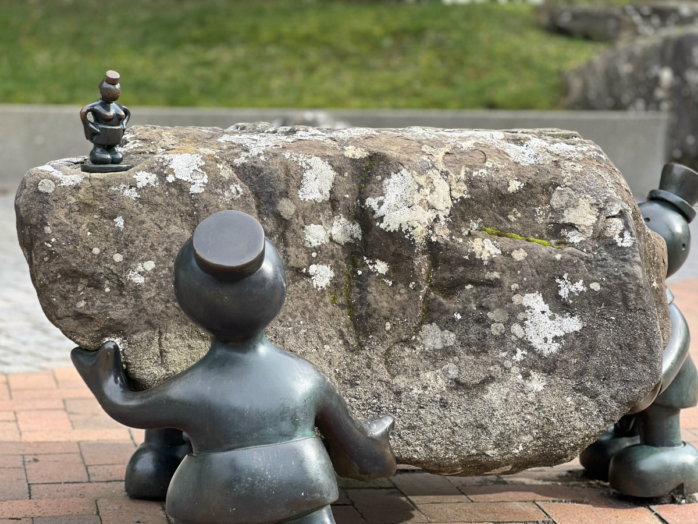

Feats Of Strength
Tom Otterness, 1999
These five installments at Western Washington University, located between Arntzen Hall and the Biology Building, all depict small stone people doing different "feats of strength". From carrying heavy boulders to just laying down facing into the sun. Each of these little people bring a different character to the campus.
